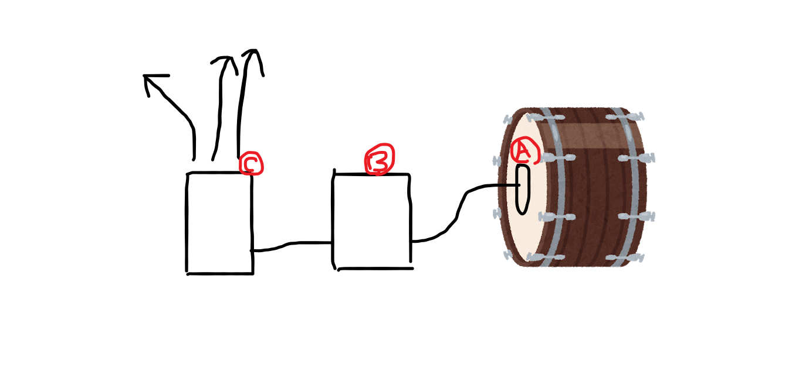

作るものの骨組みが徐々に決まってきた。応援歌には固有のリズムがあり、そのリズムが他と被ることはほとんどない。なのでそのリズムを使った応援歌識別システムを作り、製作物の心柱としたい。

概略図を使って説明する。まず、Aには振動を検知するセンサーを配置し、応援団の太鼓のリズムをBのコンピューターに伝達する。
Bのコンピューターでは伝達されたリズムを予めコンピューターに保存されたデータと参照し、該当するデータがあればそのデータをCに送る。
Cの部分は各端末に情報を送ることを役割とする。
ここまで決まったはいいのだが実はその先の雲行きが怪しい。パイソンを用いたシステムづくりの教科書となるべき本がまだ見つかっていないからだ。早めに見つけられるようにしたい。